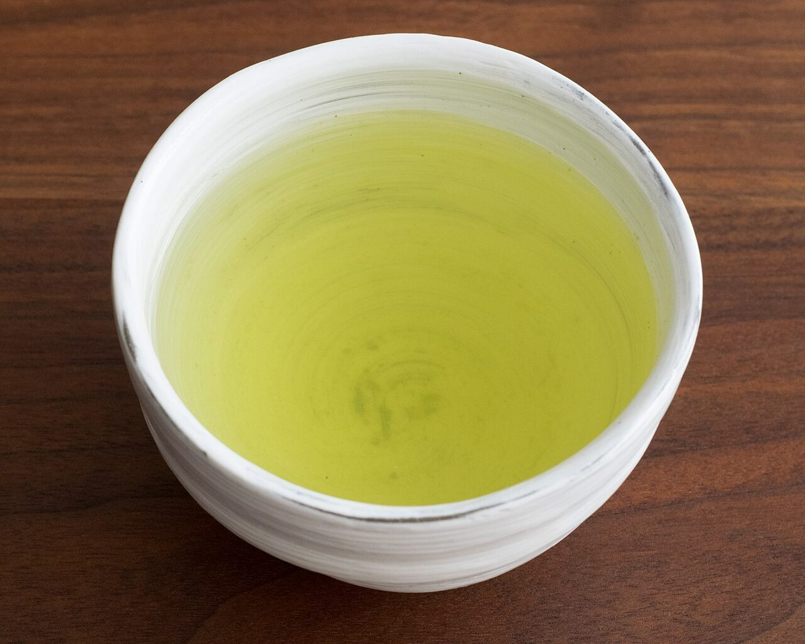

これは営業用の試作サイト(サンプル)です
掲載している写真はフリー素材のイメージです。店舗の実際の料理・店内・外観ではありません。日本以外や他の地域で撮影されたもの、撮影地が不明のものを含みます。
お店について
わかっている基本情報と、制作側のコンセプト案をまとめました。
| 店名 | blanc. |
|---|---|
| 業種 | カフェ |
| 所在地 | 奈良県橿原市新賀町237-2 |
| 電話 | 0744-48-5380 |
| @blanc.cafe__ | |
| 営業時間 | 準備中(お問い合わせください) |
| 定休日 | 準備中(お問い合わせください) |
| 店主・スタッフ | 準備中(お問い合わせください) |
| こだわり・歴史 | 準備中(お問い合わせください) |
コンセプト案(制作側の案です)
ひと息、つこう。
「ひと息、つこう。」は、制作側が考えた呼びかけの案です。まだ情報が少ない段階でも、電話やInstagramからすぐに連絡できて、所在地がわかるページを目指す案です。準備中の項目は隠さずにそのまま示し、正式版で差し替える前提で組んでいます。
お店の実際の考えや理念ではありません。正式版では、お店の言葉に差し替えます。

店主のことば
準備中(お問い合わせください)お店のこだわり
準備中(お問い合わせください)スタッフ紹介
準備中(お問い合わせください)